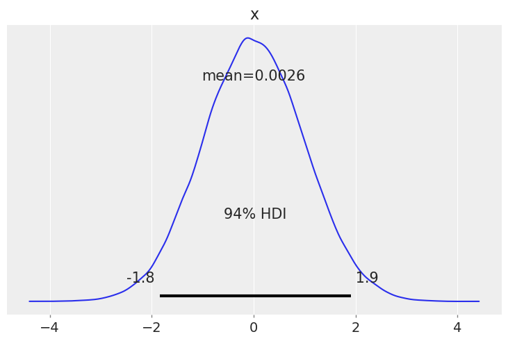
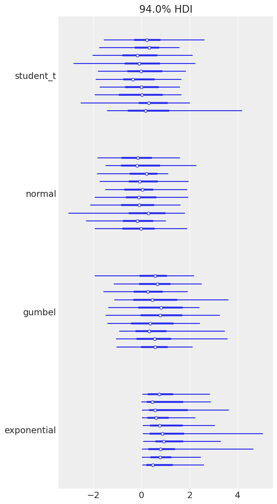
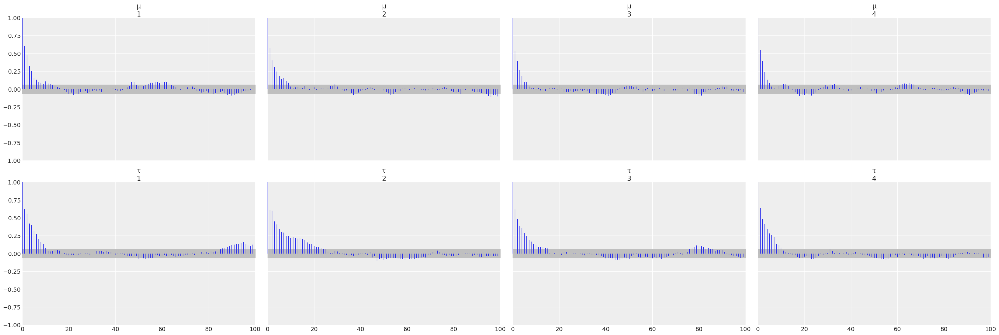
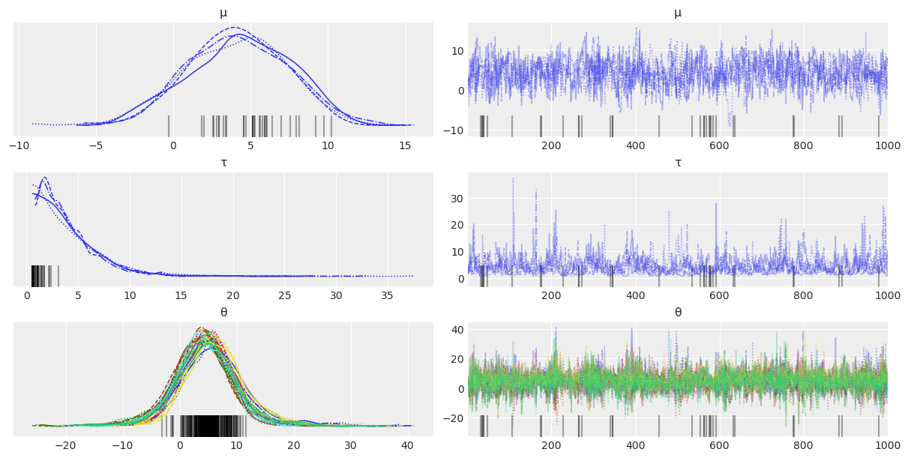
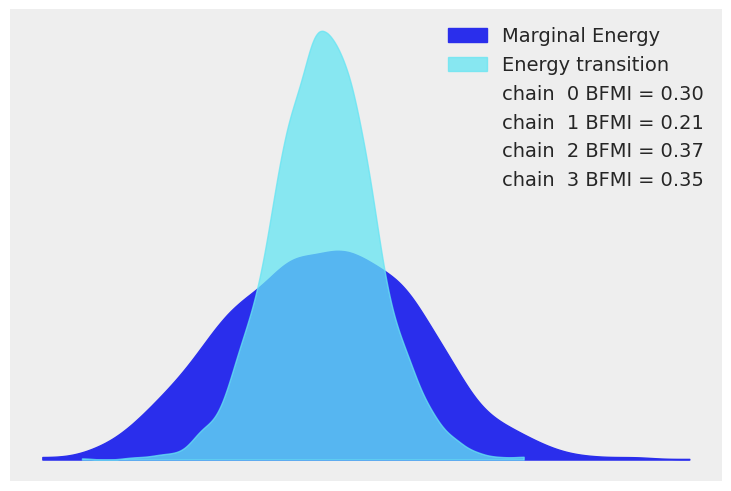
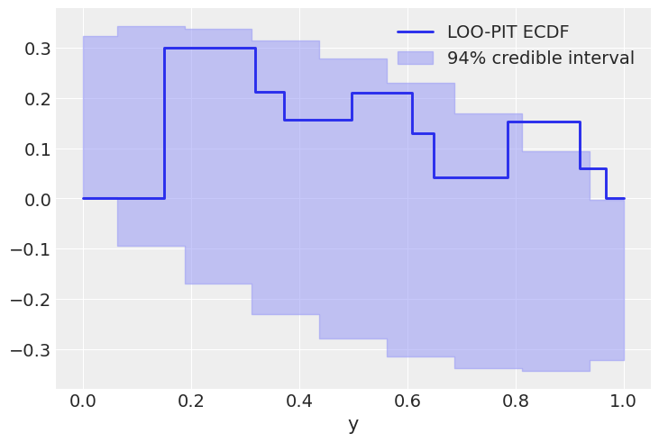
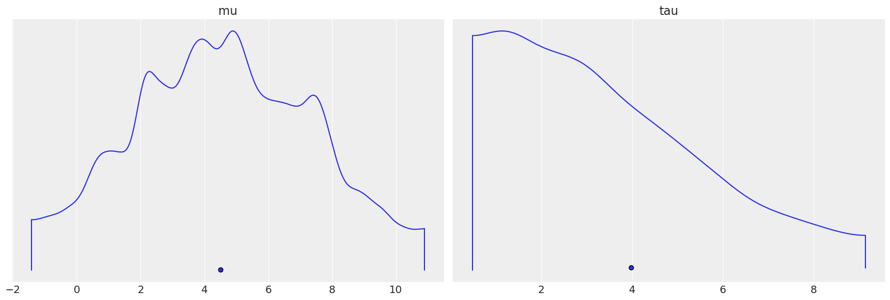
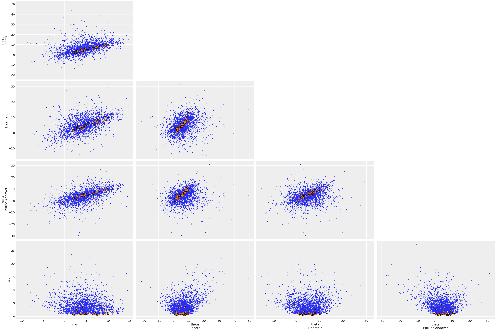

ArviZ.jl Quickstart
Set-up
Here we add the necessary packages for this notebook and load a few we will use throughout.
using ArviZ, Distributions, LinearAlgebra, PyPlot, Random, StanSample, Turing/home/runner/.julia/conda/3/x86_64/lib/python3.10/site-packages/scipy/__init__.py:146: UserWarning: A NumPy version >=1.17.3 and <1.25.0 is required for this version of SciPy (detected version 1.25.0
warnings.warn(f"A NumPy version >={np_minversion} and <{np_maxversion}"# ArviZ ships with style sheets!
ArviZ.use_style("arviz-darkgrid")Get started with plotting
ArviZ.jl is designed to be used with libraries like Stan, Turing.jl, and Soss.jl but works fine with raw arrays.
rng1 = Random.MersenneTwister(37772);plot_posterior(randn(rng1, 100_000));
Plotting a dictionary of arrays, ArviZ.jl will interpret each key as the name of a different random variable. Each row of an array is treated as an independent series of draws from the variable, called a chain. Below, we have 10 chains of 50 draws each for four different distributions.
s = (50, 10)
plot_forest((
normal=randn(rng1, s),
gumbel=rand(rng1, Gumbel(), s),
student_t=rand(rng1, TDist(6), s),
exponential=rand(rng1, Exponential(), s),
),);
Plotting with MCMCChains.jl’s Chains objects produced by Turing.jl
ArviZ is designed to work well with high dimensional, labelled data. Consider the eight schools model, which roughly tries to measure the effectiveness of SAT classes at eight different schools. To show off ArviZ’s labelling, I give the schools the names of a different eight schools.
This model is small enough to write down, is hierarchical, and uses labelling. Additionally, a centered parameterization causes divergences (which are interesting for illustration).
First we create our data and set some sampling parameters.
J = 8
y = [28.0, 8.0, -3.0, 7.0, -1.0, 1.0, 18.0, 12.0]
σ = [15.0, 10.0, 16.0, 11.0, 9.0, 11.0, 10.0, 18.0]
schools = [
"Choate",
"Deerfield",
"Phillips Andover",
"Phillips Exeter",
"Hotchkiss",
"Lawrenceville",
"St. Paul's",
"Mt. Hermon",
]
ndraws = 1_000
ndraws_warmup = 1_000
nchains = 4;Now we write and run the model using Turing:
Turing.@model function model_turing(y, σ, J=length(y))
μ ~ Normal(0, 5)
τ ~ truncated(Cauchy(0, 5), 0, Inf)
θ ~ filldist(Normal(μ, τ), J)
for i in 1:J
y[i] ~ Normal(θ[i], σ[i])
end
endmodel_turing (generic function with 3 methods)rng2 = Random.MersenneTwister(16653);param_mod_turing = model_turing(y, σ)
sampler = NUTS(ndraws_warmup, 0.8)
turing_chns = Turing.sample(
rng2, model_turing(y, σ), sampler, MCMCThreads(), ndraws, nchains
);┌ Info: Found initial step size
└ ϵ = 1.6
┌ Info: Found initial step size
└ ϵ = 0.8
┌ Info: Found initial step size
└ ϵ = 0.4
┌ Info: Found initial step size
└ ϵ = 0.8Most ArviZ functions work fine with Chains objects from Turing:
plot_autocorr(turing_chns; var_names=(:μ, :τ));
Convert to InferenceData
For much more powerful querying, analysis and plotting, we can use built-in ArviZ utilities to convert Chains objects to multidimensional data structures with named dimensions and indices. Note that for such dimensions, the information is not contained in Chains, so we need to provide it.
ArviZ is built to work with InferenceData, and the more groups it has access to, the more powerful analyses it can perform.
idata_turing_post = from_mcmcchains(
turing_chns;
coords=(; school=schools),
dims=NamedTuple(k => (:school,) for k in (:y, :σ, :θ)),
library="Turing",
)posterior
Dataset with dimensions:
Dim{:draw},
Dim{:chain},
Dim{:school} Categorical{String} String[Choate, Deerfield, …, St. Paul's, Mt. Hermon] Unordered
and 3 layers:
:μ Float64 dims: Dim{:draw}, Dim{:chain} (1000×4)
:τ Float64 dims: Dim{:draw}, Dim{:chain} (1000×4)
:θ Float64 dims: Dim{:draw}, Dim{:chain}, Dim{:school} (1000×4×8)
with metadata Dict{String, Any} with 2 entries:
"created_at" => "2023-07-06T22:38:11.324"
"inference_library" => "Turing"sample_stats
Dataset with dimensions: Dim{:draw}, Dim{:chain}
and 12 layers:
:energy Float64 dims: Dim{:draw}, Dim{:chain} (1000×4)
:n_steps Int64 dims: Dim{:draw}, Dim{:chain} (1000×4)
:diverging Bool dims: Dim{:draw}, Dim{:chain} (1000×4)
:max_energy_error Float64 dims: Dim{:draw}, Dim{:chain} (1000×4)
:energy_error Float64 dims: Dim{:draw}, Dim{:chain} (1000×4)
:is_accept Bool dims: Dim{:draw}, Dim{:chain} (1000×4)
:log_density Float64 dims: Dim{:draw}, Dim{:chain} (1000×4)
:tree_depth Int64 dims: Dim{:draw}, Dim{:chain} (1000×4)
:step_size Float64 dims: Dim{:draw}, Dim{:chain} (1000×4)
:acceptance_rate Float64 dims: Dim{:draw}, Dim{:chain} (1000×4)
:lp Float64 dims: Dim{:draw}, Dim{:chain} (1000×4)
:step_size_nom Float64 dims: Dim{:draw}, Dim{:chain} (1000×4)
with metadata Dict{String, Any} with 2 entries:
"created_at" => "2023-07-06T22:38:11.208"
"inference_library" => "Turing"Each group is a Dataset, a DimensionalData.AbstractDimStack that can be used identically to a DimensionalData.Dimstack. We can view a summary of the dataset.
idata_turing_post.posteriorDataset with dimensions:
Dim{:draw},
Dim{:chain},
Dim{:school} Categorical{String} String[Choate, Deerfield, …, St. Paul's, Mt. Hermon] Unordered
and 3 layers:
:μ Float64 dims: Dim{:draw}, Dim{:chain} (1000×4)
:τ Float64 dims: Dim{:draw}, Dim{:chain} (1000×4)
:θ Float64 dims: Dim{:draw}, Dim{:chain}, Dim{:school} (1000×4×8)
with metadata Dict{String, Any} with 2 entries:
"created_at" => "2023-07-06T22:38:11.324"
"inference_library" => "Turing"Here is a plot of the trace. Note the intelligent labels.
plot_trace(idata_turing_post);
We can also generate summary stats…
summarystats(idata_turing_post)…and examine the energy distribution of the Hamiltonian sampler.
plot_energy(idata_turing_post);
Additional information in Turing.jl
With a few more steps, we can use Turing to compute additional useful groups to add to the InferenceData.
To sample from the prior, one simply calls sample but with the Prior sampler:
prior = Turing.sample(rng2, param_mod_turing, Prior(), ndraws);To draw from the prior and posterior predictive distributions we can instantiate a “predictive model”, i.e. a Turing model but with the observations set to missing, and then calling predict on the predictive model and the previously drawn samples:
# Instantiate the predictive model
param_mod_predict = model_turing(similar(y, Missing), σ)
# and then sample!
prior_predictive = Turing.predict(rng2, param_mod_predict, prior)
posterior_predictive = Turing.predict(rng2, param_mod_predict, turing_chns);And to extract the pointwise log-likelihoods, which is useful if you want to compute metrics such as loo,
log_likelihood = let
log_likelihood = Turing.pointwise_loglikelihoods(
param_mod_turing, MCMCChains.get_sections(turing_chns, :parameters)
)
# Ensure the ordering of the loglikelihoods matches the ordering of `posterior_predictive`
ynames = string.(keys(posterior_predictive))
log_likelihood_y = getindex.(Ref(log_likelihood), ynames)
(; y=cat(log_likelihood_y...; dims=3))
end;This can then be included in the from_mcmcchains call from above:
idata_turing = from_mcmcchains(
turing_chns;
posterior_predictive,
log_likelihood,
prior,
prior_predictive,
observed_data=(; y),
coords=(; school=schools),
dims=NamedTuple(k => (:school,) for k in (:y, :σ, :θ)),
library=Turing,
)posterior
Dataset with dimensions:
Dim{:draw},
Dim{:chain},
Dim{:school} Categorical{String} String[Choate, Deerfield, …, St. Paul's, Mt. Hermon] Unordered
and 3 layers:
:μ Float64 dims: Dim{:draw}, Dim{:chain} (1000×4)
:τ Float64 dims: Dim{:draw}, Dim{:chain} (1000×4)
:θ Float64 dims: Dim{:draw}, Dim{:chain}, Dim{:school} (1000×4×8)
with metadata Dict{String, Any} with 3 entries:
"created_at" => "2023-07-06T22:38:38.105"
"inference_library_version" => "0.24.4"
"inference_library" => "Turing"posterior_predictive
Dataset with dimensions:
Dim{:draw},
Dim{:chain},
Dim{:school} Categorical{String} String[Choate, Deerfield, …, St. Paul's, Mt. Hermon] Unordered
and 1 layer:
:y Float64 dims: Dim{:draw}, Dim{:chain}, Dim{:school} (1000×4×8)
with metadata Dict{String, Any} with 3 entries:
"created_at" => "2023-07-06T22:38:37.15"
"inference_library_version" => "0.24.4"
"inference_library" => "Turing"log_likelihood
Dataset with dimensions:
Dim{:draw},
Dim{:chain},
Dim{:school} Categorical{String} String[Choate, Deerfield, …, St. Paul's, Mt. Hermon] Unordered
and 1 layer:
:y Float64 dims: Dim{:draw}, Dim{:chain}, Dim{:school} (1000×4×8)
with metadata Dict{String, Any} with 3 entries:
"created_at" => "2023-07-06T22:38:37.884"
"inference_library_version" => "0.24.4"
"inference_library" => "Turing"sample_stats
Dataset with dimensions: Dim{:draw}, Dim{:chain}
and 12 layers:
:energy Float64 dims: Dim{:draw}, Dim{:chain} (1000×4)
:n_steps Int64 dims: Dim{:draw}, Dim{:chain} (1000×4)
:diverging Bool dims: Dim{:draw}, Dim{:chain} (1000×4)
:max_energy_error Float64 dims: Dim{:draw}, Dim{:chain} (1000×4)
:energy_error Float64 dims: Dim{:draw}, Dim{:chain} (1000×4)
:is_accept Bool dims: Dim{:draw}, Dim{:chain} (1000×4)
:log_density Float64 dims: Dim{:draw}, Dim{:chain} (1000×4)
:tree_depth Int64 dims: Dim{:draw}, Dim{:chain} (1000×4)
:step_size Float64 dims: Dim{:draw}, Dim{:chain} (1000×4)
:acceptance_rate Float64 dims: Dim{:draw}, Dim{:chain} (1000×4)
:lp Float64 dims: Dim{:draw}, Dim{:chain} (1000×4)
:step_size_nom Float64 dims: Dim{:draw}, Dim{:chain} (1000×4)
with metadata Dict{String, Any} with 3 entries:
"created_at" => "2023-07-06T22:38:38.104"
"inference_library_version" => "0.24.4"
"inference_library" => "Turing"prior
Dataset with dimensions:
Dim{:draw},
Dim{:chain},
Dim{:school} Categorical{String} String[Choate, Deerfield, …, St. Paul's, Mt. Hermon] Unordered
and 3 layers:
:μ Float64 dims: Dim{:draw}, Dim{:chain} (1000×1)
:τ Float64 dims: Dim{:draw}, Dim{:chain} (1000×1)
:θ Float64 dims: Dim{:draw}, Dim{:chain}, Dim{:school} (1000×1×8)
with metadata Dict{String, Any} with 3 entries:
"created_at" => "2023-07-06T22:38:39.089"
"inference_library_version" => "0.24.4"
"inference_library" => "Turing"prior_predictive
Dataset with dimensions:
Dim{:draw},
Dim{:chain},
Dim{:school} Categorical{String} String[Choate, Deerfield, …, St. Paul's, Mt. Hermon] Unordered
and 1 layer:
:y Float64 dims: Dim{:draw}, Dim{:chain}, Dim{:school} (1000×1×8)
with metadata Dict{String, Any} with 3 entries:
"created_at" => "2023-07-06T22:38:38.755"
"inference_library_version" => "0.24.4"
"inference_library" => "Turing"sample_stats_prior
Dataset with dimensions: Dim{:draw}, Dim{:chain}
and 1 layer:
:lp Float64 dims: Dim{:draw}, Dim{:chain} (1000×1)
with metadata Dict{String, Any} with 3 entries:
"created_at" => "2023-07-06T22:38:38.943"
"inference_library_version" => "0.24.4"
"inference_library" => "Turing"observed_data
Dataset with dimensions:
Dim{:school} Categorical{String} String[Choate, Deerfield, …, St. Paul's, Mt. Hermon] Unordered
and 1 layer:
:y Float64 dims: Dim{:school} (8)
with metadata Dict{String, Any} with 3 entries:
"created_at" => "2023-07-06T22:38:39.44"
"inference_library_version" => "0.24.4"
"inference_library" => "Turing"Then we can for example compute the expected leave-one-out (LOO) predictive density, which is an estimate of the out-of-distribution predictive fit of the model:
loo(idata_turing) # higher ELPD is betterPSISLOOResult with estimates
Estimate SE
elpd -31 1.5
p 0.9 0.35
and PSISResult with 1000 draws, 4 chains, and 8 parameters
Pareto shape (k) diagnostic values:
Count Min. ESS
(-Inf, 0.5] good 5 (62.5%) 723
(0.5, 0.7] okay 3 (37.5%) 390If the model is well-calibrated, i.e. it replicates the true generative process well, the CDF of the pointwise LOO values should be similarly distributed to a uniform distribution. This can be inspected visually:
plot_loo_pit(idata_turing; y=:y, ecdf=true);
Plotting with Stan.jl outputs
StanSample.jl comes with built-in support for producing InferenceData outputs.
Here is the same centered eight schools model in Stan:
schools_code = """
data {
int<lower=0> J;
real y[J];
real<lower=0> sigma[J];
}
parameters {
real mu;
real<lower=0> tau;
real theta[J];
}
model {
mu ~ normal(0, 5);
tau ~ cauchy(0, 5);
theta ~ normal(mu, tau);
y ~ normal(theta, sigma);
}
generated quantities {
vector[J] log_lik;
vector[J] y_hat;
for (j in 1:J) {
log_lik[j] = normal_lpdf(y[j] | theta[j], sigma[j]);
y_hat[j] = normal_rng(theta[j], sigma[j]);
}
}
"""
schools_data = Dict("J" => J, "y" => y, "sigma" => σ)
idata_stan = mktempdir() do path
stan_model = SampleModel("schools", schools_code, path)
_ = stan_sample(
stan_model;
data=schools_data,
num_chains=nchains,
num_warmups=ndraws_warmup,
num_samples=ndraws,
seed=28983,
summary=false,
)
return StanSample.inferencedata(
stan_model;
posterior_predictive_var=:y_hat,
observed_data=(; y),
log_likelihood_var=:log_lik,
coords=(; school=schools),
dims=NamedTuple(
k => (:school,) for k in (:y, :sigma, :theta, :log_lik, :y_hat)
),
)
end[ Info: /tmp/jl_qZcpA8/schools.stan updated.posterior
Dataset with dimensions:
Dim{:draw},
Dim{:chain},
Dim{:school} Categorical{String} String[Choate, Deerfield, …, St. Paul's, Mt. Hermon] Unordered
and 3 layers:
:mu Float64 dims: Dim{:draw}, Dim{:chain} (1000×4)
:tau Float64 dims: Dim{:draw}, Dim{:chain} (1000×4)
:theta Float64 dims: Dim{:draw}, Dim{:chain}, Dim{:school} (1000×4×8)
with metadata Dict{String, Any} with 1 entry:
"created_at" => "2023-07-06T22:39:25.626"posterior_predictive
Dataset with dimensions:
Dim{:draw},
Dim{:chain},
Dim{:school} Categorical{String} String[Choate, Deerfield, …, St. Paul's, Mt. Hermon] Unordered
and 1 layer:
:y_hat Float64 dims: Dim{:draw}, Dim{:chain}, Dim{:school} (1000×4×8)
with metadata Dict{String, Any} with 1 entry:
"created_at" => "2023-07-06T22:39:24.595"log_likelihood
Dataset with dimensions:
Dim{:draw},
Dim{:chain},
Dim{:school} Categorical{String} String[Choate, Deerfield, …, St. Paul's, Mt. Hermon] Unordered
and 1 layer:
:log_lik Float64 dims: Dim{:draw}, Dim{:chain}, Dim{:school} (1000×4×8)
with metadata Dict{String, Any} with 1 entry:
"created_at" => "2023-07-06T22:39:25.378"sample_stats
Dataset with dimensions: Dim{:draw}, Dim{:chain}
and 7 layers:
:tree_depth Int64 dims: Dim{:draw}, Dim{:chain} (1000×4)
:energy Float64 dims: Dim{:draw}, Dim{:chain} (1000×4)
:diverging Bool dims: Dim{:draw}, Dim{:chain} (1000×4)
:acceptance_rate Float64 dims: Dim{:draw}, Dim{:chain} (1000×4)
:n_steps Int64 dims: Dim{:draw}, Dim{:chain} (1000×4)
:lp Float64 dims: Dim{:draw}, Dim{:chain} (1000×4)
:step_size Float64 dims: Dim{:draw}, Dim{:chain} (1000×4)
with metadata Dict{String, Any} with 1 entry:
"created_at" => "2023-07-06T22:39:24.951"observed_data
Dataset with dimensions:
Dim{:school} Categorical{String} String[Choate, Deerfield, …, St. Paul's, Mt. Hermon] Unordered
and 1 layer:
:y Float64 dims: Dim{:school} (8)
with metadata Dict{String, Any} with 1 entry:
"created_at" => "2023-07-06T22:39:25.789"plot_density(idata_stan; var_names=(:mu, :tau));
Here is a plot showing where the Hamiltonian sampler had divergences:
plot_pair(
idata_stan;
coords=Dict(:school => ["Choate", "Deerfield", "Phillips Andover"]),
divergences=true,
);
Environment
using Pkg
Pkg.status()Status `~/work/ArviZ.jl/ArviZ.jl/docs/Project.toml`
[cbdf2221] AlgebraOfGraphics v0.6.16
[131c737c] ArviZ v0.9.0-DEV `~/work/ArviZ.jl/ArviZ.jl`
[13f3f980] CairoMakie v0.10.6
[992eb4ea] CondaPkg v0.2.18
[a93c6f00] DataFrames v1.5.0
[0703355e] DimensionalData v0.24.12
[31c24e10] Distributions v0.25.98
[e30172f5] Documenter v0.27.25
⌅ [f6006082] EvoTrees v0.14.11
[7073ff75] IJulia v1.24.2
[c7f686f2] MCMCChains v6.0.3
[be115224] MCMCDiagnosticTools v0.3.4
[a7f614a8] MLJBase v0.21.11
[614be32b] MLJIteration v0.5.1
[438e738f] PyCall v1.96.1
[d330b81b] PyPlot v2.11.1
[754583d1] SampleChains v0.5.1
[c1514b29] StanSample v7.4.1
⌅ [fce5fe82] Turing v0.24.4
[f43a241f] Downloads v1.6.0
[37e2e46d] LinearAlgebra
[10745b16] Statistics v1.9.0
Info Packages marked with ⌅ have new versions available but compatibility constraints restrict them from upgrading. To see why use `status --outdated`versioninfo()Julia Version 1.9.2
Commit e4ee485e909 (2023-07-05 09:39 UTC)
Platform Info:
OS: Linux (x86_64-linux-gnu)
CPU: 2 × Intel(R) Xeon(R) Platinum 8272CL CPU @ 2.60GHz
WORD_SIZE: 64
LIBM: libopenlibm
LLVM: libLLVM-14.0.6 (ORCJIT, skylake-avx512)
Threads: 3 on 2 virtual cores
Environment:
JULIA_CMDSTAN_HOME = /home/runner/work/ArviZ.jl/ArviZ.jl/.cmdstan//cmdstan-2.25.0/
JULIA_IMAGE_THREADS = 1
JULIA_NUM_THREADS = 2